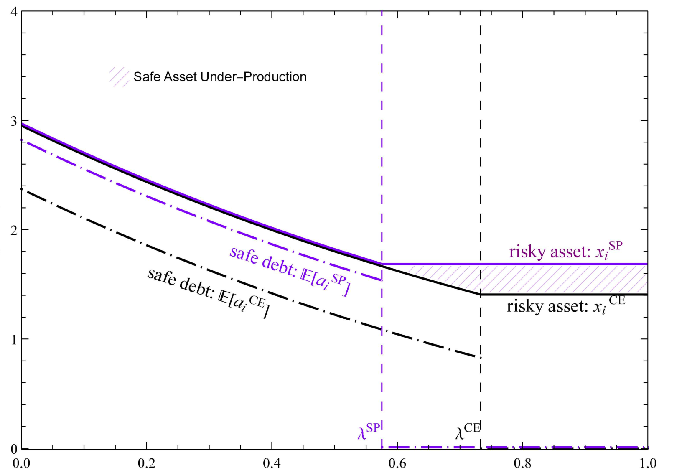

David Xiaoyu Xu

Financial Market Structure and the Supply of Safe Assets: An Analysis of the Leveraged Loan Market (Job Market Paper)
Abstract: Dynamically replacing deteriorated collateral helps intermediaries increase the supply of safe assets beyond static pooling and tranching. An important application of this idea is that collateralized loan obligations (CLOs) issue safe bonds by promising “reverse risk shifting” trades in bad times. I develop an equilibrium model in which CLOs and other nonbanks endogenously arise and show that their secondary market interactions generate investment and financing externalities across asset managers. Consequently, the leveraged loan market has too many CLOs, but underproduces safe assets relative to a constrained efficient benchmark. Policies targeting only one side of intermediary balance sheets can exacerbate welfare losses.
Selected Presentations: Princeton Young Economist Forum, PhD Symposium on Financial Market Research & Policy Developments, FMA Doctoral Consortium, AEA Poster Session

Fund Flows in the Shadow of Stock Trading Regulation (with Xiang Kang)
Abstract: Trading suspension, a widely adopted regulatory rule, prevents information from being incorporated into stock prices. Using a sample of 3,205 long-lasting suspension events between 2004-2018, we show that mutual funds holding suspended stocks generally fail to adjust for stale prices, generating stale net asset values (NAVs). We find that investors exploit predictable fund performance that quickly realizes after trading resumes: flows positively respond to firm-specific news about suspended stocks in fund portfolios. Portfolio disclosure plays a key informational role in distorting flows. Our findings suggest that regulatory interventions on trading activities can create negative externalities among mutual fund investors.
Selected Presentations: AFA Poster Session, CICF, CAFM